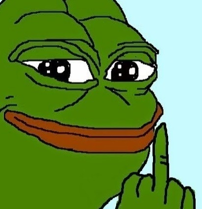

가장 대중적으로 알려진 이미지.

맷 퓨리(Matt Furie) 작가의 2005년 만화 <Boy's Club>의 등장 캐릭터.
임팩트 있는 슬픈 표정 덕분에 2009년을 기점으로 4chan에서 Feels Guy와 함께 자주 쓰는 밈 중 하나가 되
었고, 2015년 전후로 자연스럽게 한국을 비롯한 많은 인터넷 커뮤니티에서 애용 중이다. 대부분은 찌질하면
서도 짠해보이는 온갖 인간 군상의 희노애락을 표현하는 짤방의 용도로서 주로 사용되고 있다. 여러모로 Ra
ge Guy를 대체하는 느낌이 크다.
어떻게 개조해도 적절한 감정 바리에이션 덕분에 슬픈 감정에서 시작해 분노, 희열, 자살충동 등 온갖 감정
의 바리에이션이 존재한다. 장잉정신을 발휘해 만든 페페 그림은 Rare Pepe 라고 불리며, 이 자체로 밈 취급
을 받는다. 가끔씩 진짜로 '초희귀 레어 페페 세트.zip' 같은 게 이베이에 올라오기도 한다. 비공식 상품들도
존재하며 봉제인형도 있고 휴지걸이도 있다.
|
 |
|
가장 흔한 바리에이션 1 가장 대중적으로 알려진 이미지. |
욕하는 개구리 |
|
|
| 시무룩 하는 개구리 | 극대노 하는 개구리 |
주요 예시는 낙담한 얼굴의 개구리의 짤방을 달아놓고 'You will never...' 혹은 'There will never be...' 등 neve
r가 들어가는 문장으로 인생의 슬픈 사실을 적어놓는 것이다.
사실 이건 웃는 표정의 개구리가 Feels good man이라고 말하는 짤방이었는데, 이게 지금의 울컥하는 슬픈
표정(일명 Feels bad man)으로 바뀌더니 You will never~ 스레의 필수요소가 되었다.

이 저작물은 CC BY-NC-SA 2.0 KR에 따라 이용할 수 있습니다. (단 라이선스가 명시된 일부 문서 및 삽화 제외)
기여하신 문서의 저작권은 각 기여자에게 있으며, 각 기여자는 기여하신 부분의 저작권을 갖습니다.
나무위키는 백과사전이 아니며 검증되지 않았거나, 편향적이거나 잘못된 서술이 있을 수 있습니다.
나무위키는 위키위키입니다. 여러분이 직접 문서를 고칠 수 있으며, 다른 사람의 의견을 원할 경우 직접 토론을 발제할 수 있습니다.